12 Cell-Cell Communication and Microenvironment Interaction
This mainline moves from isolated cell states to tissue-level interaction logic. Once cell identities are established, many biological questions become relational: which populations signal to each other, which pathways dominate the exchange, and how does the microenvironment organize those interactions?
sclet treats communication analysis as a standardized downstream layer rather than a backend-specific side quest. This chapter shows how RunCCI() and related adapters fit into the broader state-aware workflow.
12.1 Input
The recommended entry point is RunCCI(). It requires a SingleCellExperiment object that includes cell clustering information. By default, it delegates to CellChat as the computational backend.
The group parameter should reference a variable within the SingleCellExperiment object that holds the clustering data.
RunCCI() follows the same layer contract as the rest of sclet. In most RNA workflows, layer = "logcounts" is the safest explicit choice. If you omit it, the function resolves from DefaultLayer(sce) and avoids scaled layers when necessary.
Users can add their own clustering using the following commands:
12.2 Running CCI
Wrapper function for unified CCI analysis. Behind the scenes, it extracts standardized ligand-receptor interactions into the state tree. By default, keep_object = FALSE to prevent the SingleCellExperiment object from bloating with massive third-party objects.
Here we set keep_object = TRUE purely because we want to demonstrate the legacy CellChat visualization in the final section of this chapter.
library(sclet)
# use the bundled pancreas SCE demo object
sce <- readRDS("data/pancreas_sub_sce.rds")
sce <- RunCCI(sce, method = "CellChat", group = "CellType", layer = "logcounts", name = "cellchat_main", species = "mouse", keep_object = TRUE)## [1] "Create a CellChat object from a data matrix"## Set cell identities for the new CellChat object
## The cell groups used for CellChat analysis are Ductal, Ngn3 low EP, Ngn3 high EP, Pre-endocrine, Endocrine
## The number of highly variable ligand-receptor pairs used for signaling inference is 342
## triMean is used for calculating the average gene expression per cell group.
## [1] ">>> Run CellChat on sc/snRNA-seq data <<< [2026-08-29 22:44:04.515616]"
## [1] ">>> CellChat inference is done. Parameter values are stored in `object@options$parameter` <<< [2026-08-29 22:44:16.232136]"After running RunCCI(), the updated SCE keeps a structured communication record. This is useful when you want downstream code to check has_cci(sce) or inspect the standardized interactions data frame through get_cci(sce).
## source_group target_group ligand receptor pathway
## 1 Ductal Ductal Igf2 Igf1r IGF
## 2 Ngn3 low EP Ductal Igf2 Igf1r IGF
## 3 Ngn3 high EP Ductal Igf2 Igf1r IGF
## 4 Ductal Ngn3 low EP Igf2 Igf1r IGF
## 5 Ngn3 low EP Ngn3 low EP Igf2 Igf1r IGF
## 6 Ngn3 high EP Ngn3 low EP Igf2 Igf1r IGF
## probability p_value method
## 1 7.371325e-08 0 CellChat
## 2 7.371325e-08 0 CellChat
## 3 7.371325e-08 0 CellChat
## 4 7.371325e-08 0 CellChat
## 5 7.371325e-08 0 CellChat
## 6 7.371325e-08 0 CellChatIf you keep multiple communication runs in the same object, give them different name values and inspect a specific record with get_cci(sce, id = "your_id").
12.3 Using Alternative Backends (CellPhoneDB & NicheNet)
sclet acts as a unified adapter. You can easily switch to other popular CCI backends without changing your downstream data extraction or visualization code.
12.3.1 CellPhoneDB
CellPhoneDB is an established method that relies on a curated database of ligands and receptors. Through sclet, it runs directly via Python integration (basilisk):
12.3.2 NicheNet
While CellChat and CellPhoneDB focus on ligand-receptor pairs, NicheNet takes it a step further by predicting which ligands from sender cells regulate specific gene sets (e.g., DEGs) in receiver cells.
NicheNet requires pre-downloaded prior models (ligand-target matrix, etc.).
# Load NicheNet prior models (you must download these first)
ligand_target_matrix <- readRDS("ligand_target_matrix.rds")
lr_network <- readRDS("lr_network.rds")
weighted_networks <- readRDS("weighted_networks.rds")
# Run NicheNet to find ligands from Endocrine cells affecting Epithelial cells
sce <- RunCCI(
sce,
method = "NicheNet",
group = "CellType",
receiver = "Epithelial",
sender = "Endocrine",
# If genes_oi is NULL, sclet automatically finds DEGs for the receiver cluster
ligand_target_matrix = ligand_target_matrix,
lr_network = lr_network,
weighted_networks = weighted_networks,
name = "nichenet_main",
top_n_ligands = 20
)
nichenet_df <- get_cci(sce, id = "nichenet_main")
head(nichenet_df)12.4 Visualization
Instead of relying heavily on third-party specific visualization functions, sclet provides native ggplot2 and circlize based visualization functions that directly consume the standardized CCI data layer. This decouples your analysis from specific backend plotting idiosyncrasies.
# Native Bubble plot for specific cell pairs
plot_cci_bubble(sce, sources = c("Ductal", "Endocrine"), targets = c("Ductal", "Endocrine"))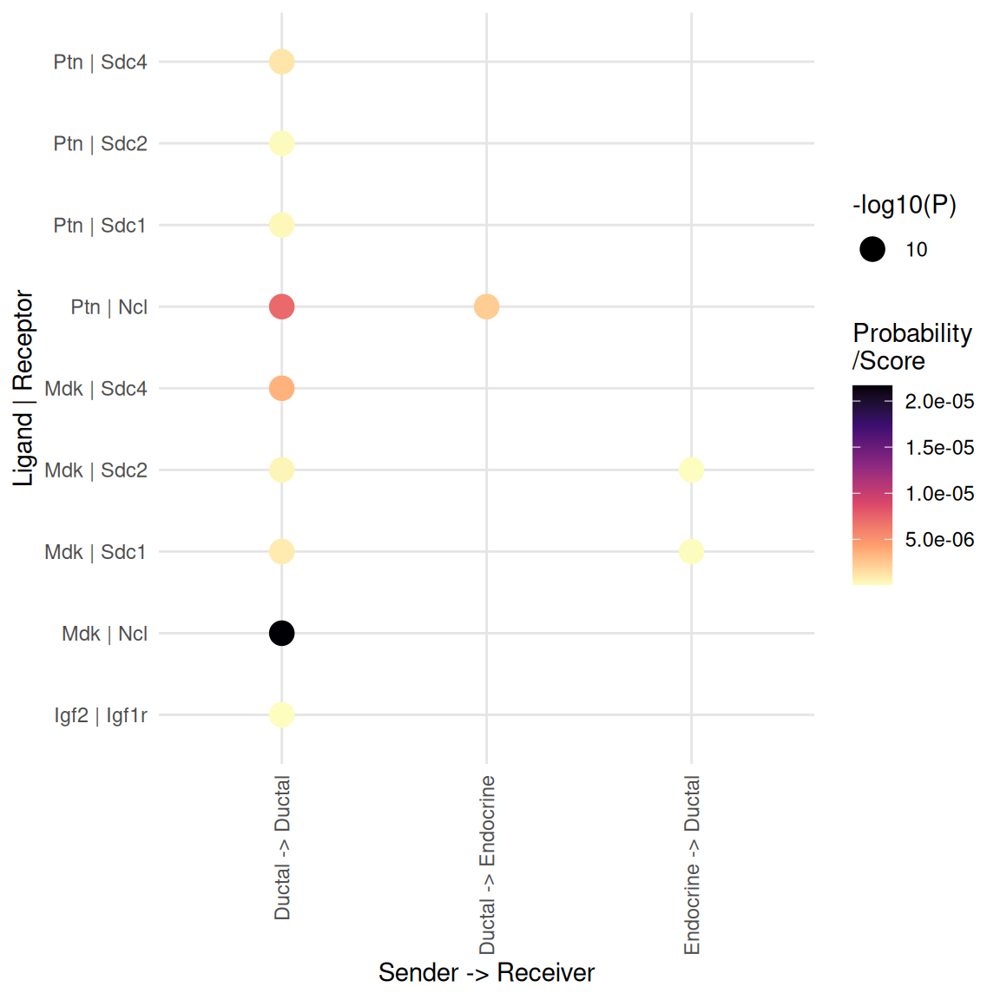
# Native Arrow plot between specific cell types
plot_cci_arrow(sce, cell_a = "Ductal", cell_b = "Endocrine", group = "CellType", top_n = 10)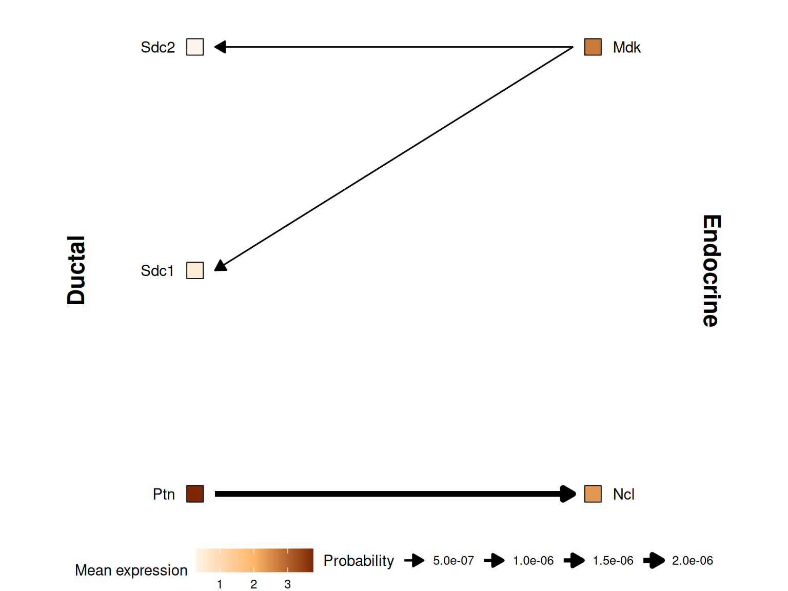
12.4.1 Legacy CellChat Visualization
If you still need the full power of CellChat’s specific visualizations, you can retrieve the original CellChat object and use it directly.
# Retrieve the original CellChat object if you need legacy plots
cci_obj <- get_cellchat(sce, element = "object")library(aplot)
groupSize <- as.numeric(table(cci_obj@idents))
plot_list(
~CellChat::netVisual_circle(cci_obj@net$count,
vertex.weight = groupSize, weight.scale = T,
label.edge= F, title.name = "Number of interactions"),
~CellChat::netVisual_circle(cci_obj@net$weight,
vertex.weight = groupSize, weight.scale = T,
label.edge= F, title.name = "Interaction weights/strength")
)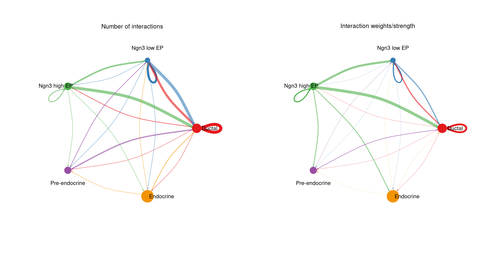
pathways.show <- c("PTN")
CellChat::netVisual_aggregate(cci_obj, signaling = pathways.show, layout = "circle")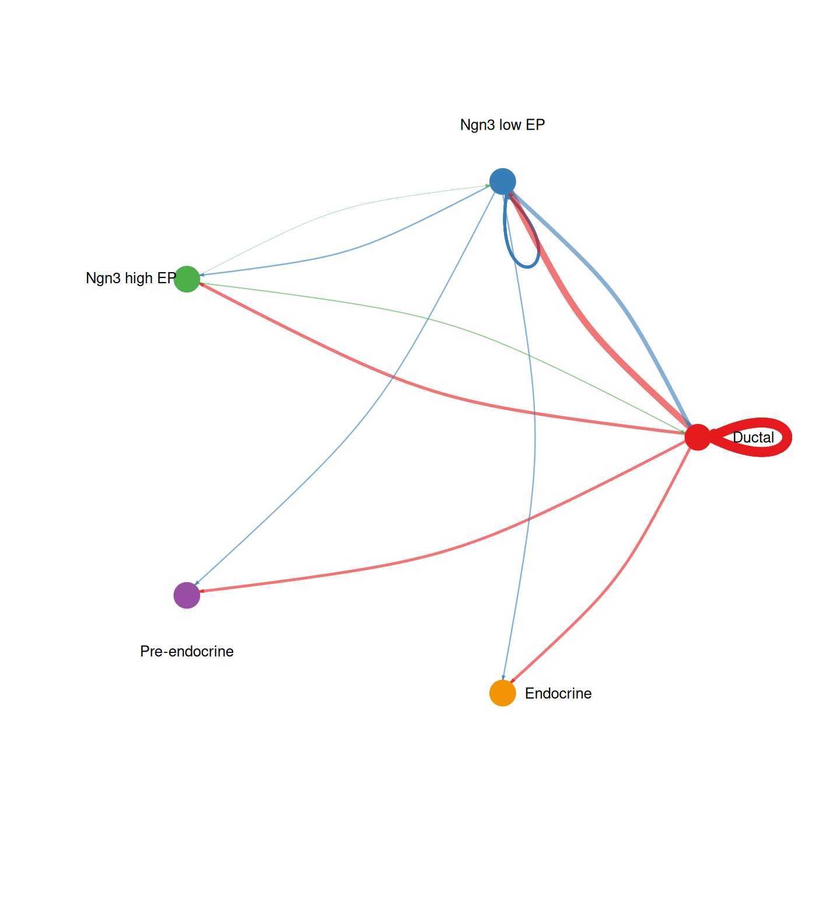
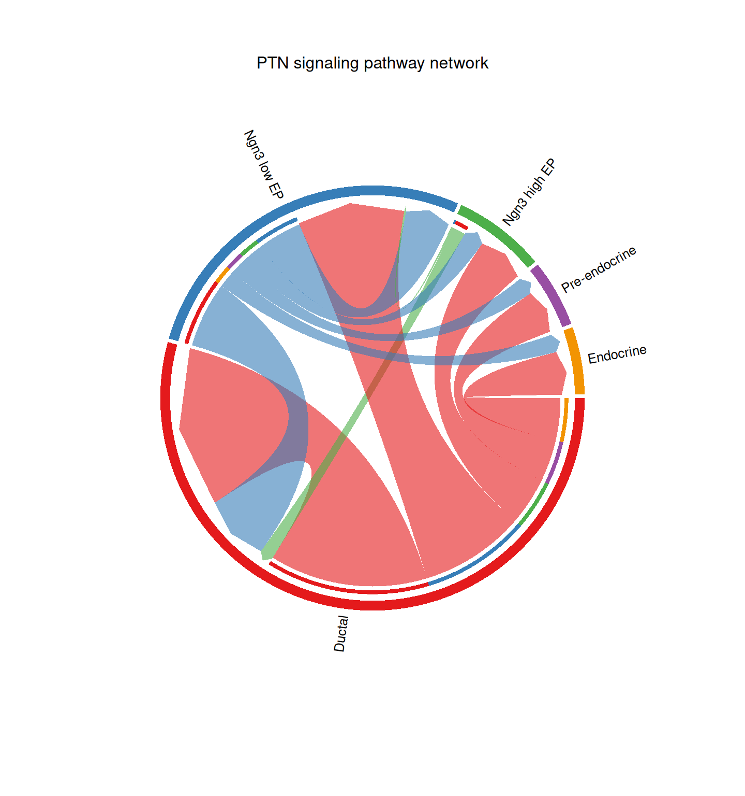
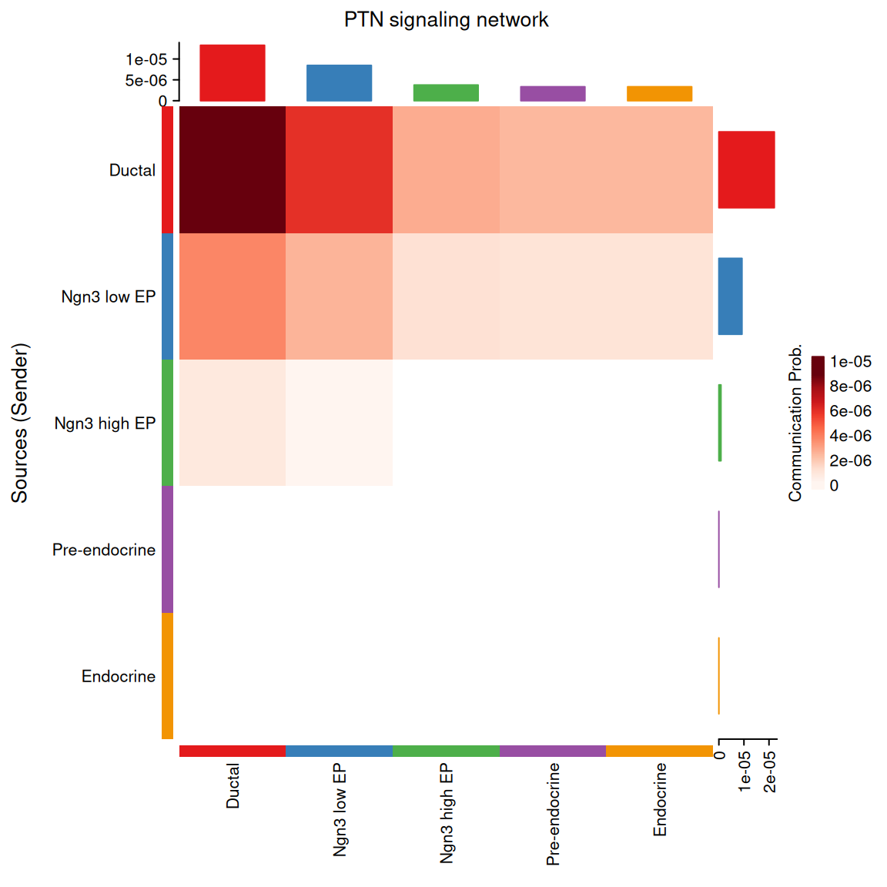
group.cellType <- c(rep("Epithelial", 3), rep("Endocrine", 2)) # grouping cell clusters into Epithelial and Endocrine cells
names(group.cellType) <- levels(cci_obj@idents)
CellChat::netVisual_chord_cell(cci_obj, signaling = pathways.show, group = group.cellType, title.name = paste0(pathways.show, " signaling network"))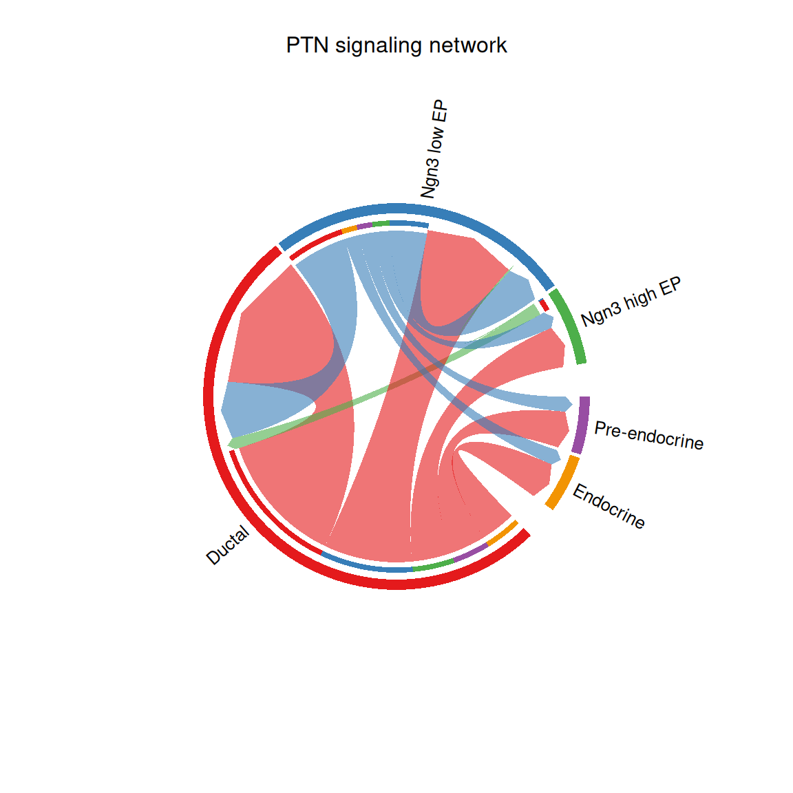
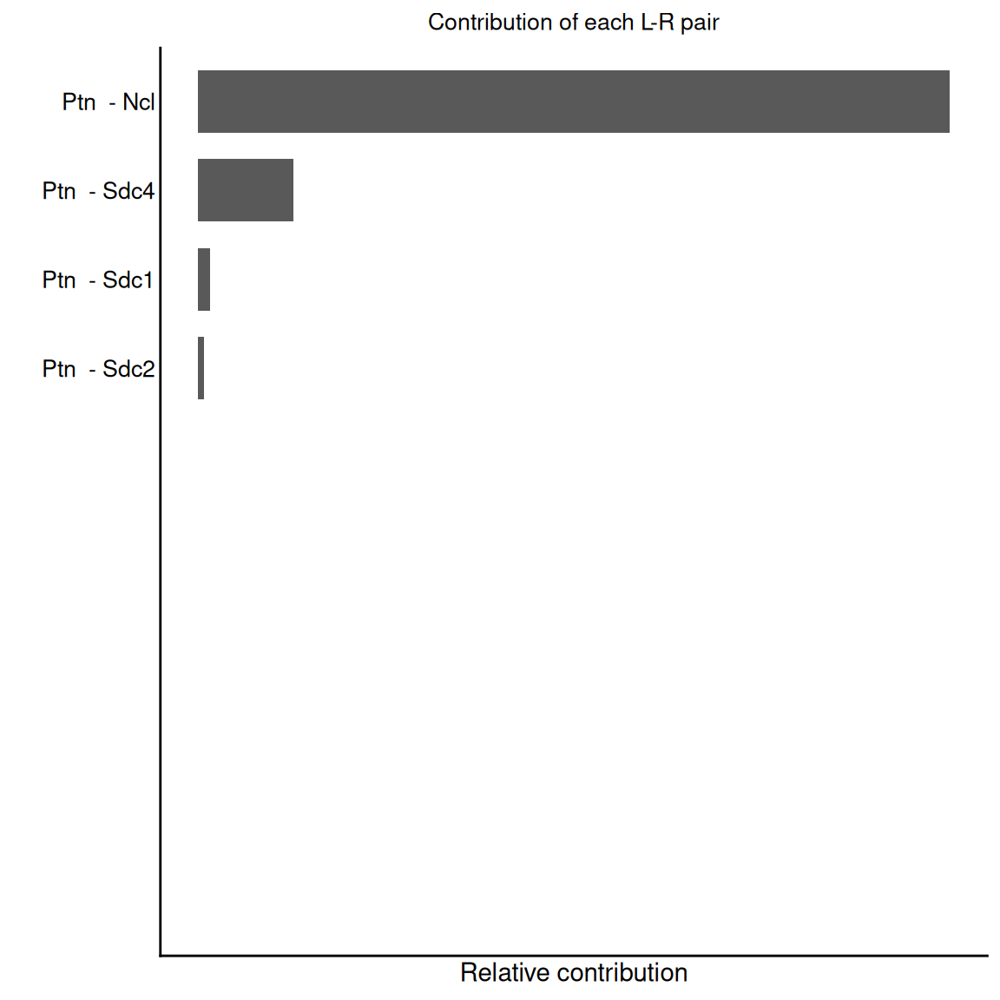
pairLR.pathway <- CellChat::extractEnrichedLR(cci_obj, signaling = pathways.show, geneLR.return = FALSE)
LR.show <- pairLR.pathway[1,]
vertex.receiver = seq(1,4)
# CellChat::netVisual_individual(cci_obj, signaling = pathways.show, pairLR.use = LR.show, vertex.receiver = vertex.receiver)
CellChat::netVisual_individual(cci_obj, signaling = pathways.show, pairLR.use = LR.show, layout = "circle")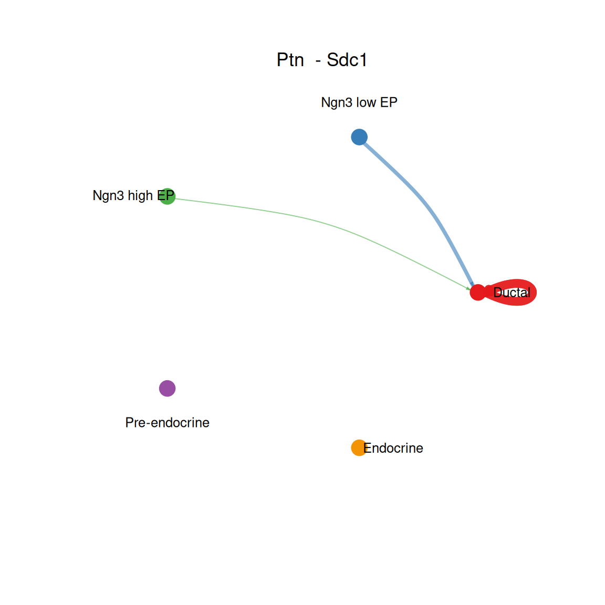
## [[1]]CellChat::netVisual_individual(cci_obj, signaling = pathways.show, pairLR.use = LR.show, layout = "chord")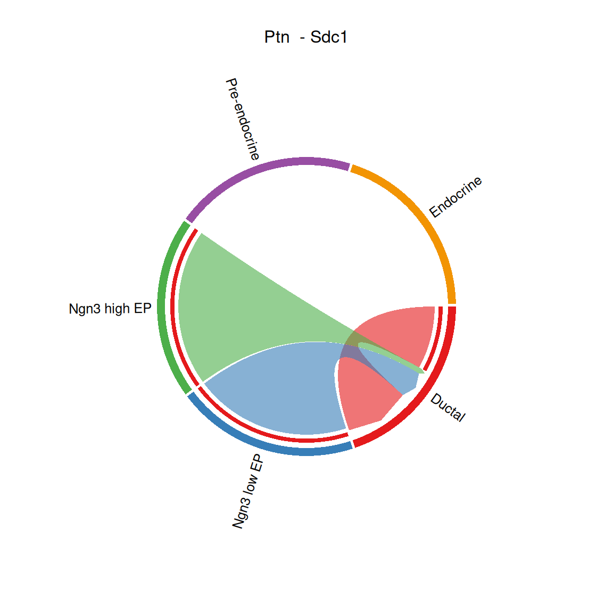
## [[1]]CellChat::netVisual_bubble(cci_obj, sources.use = 1:2, targets.use = c(3:5), remove.isolate = FALSE)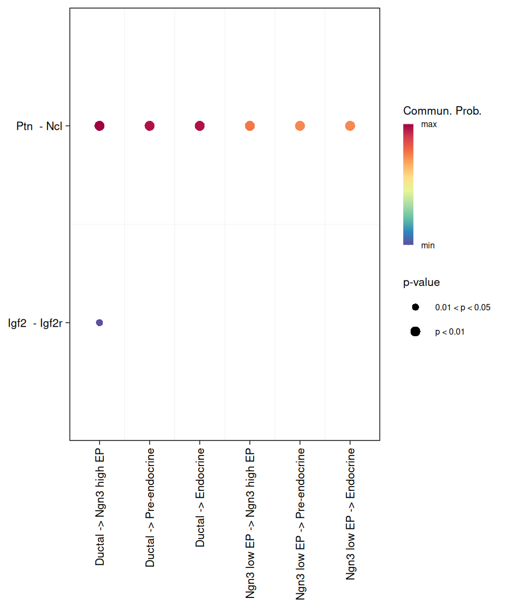